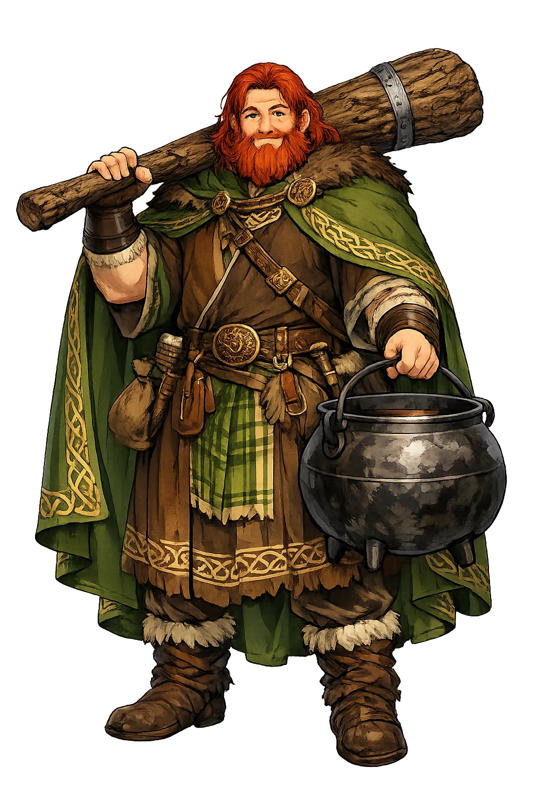
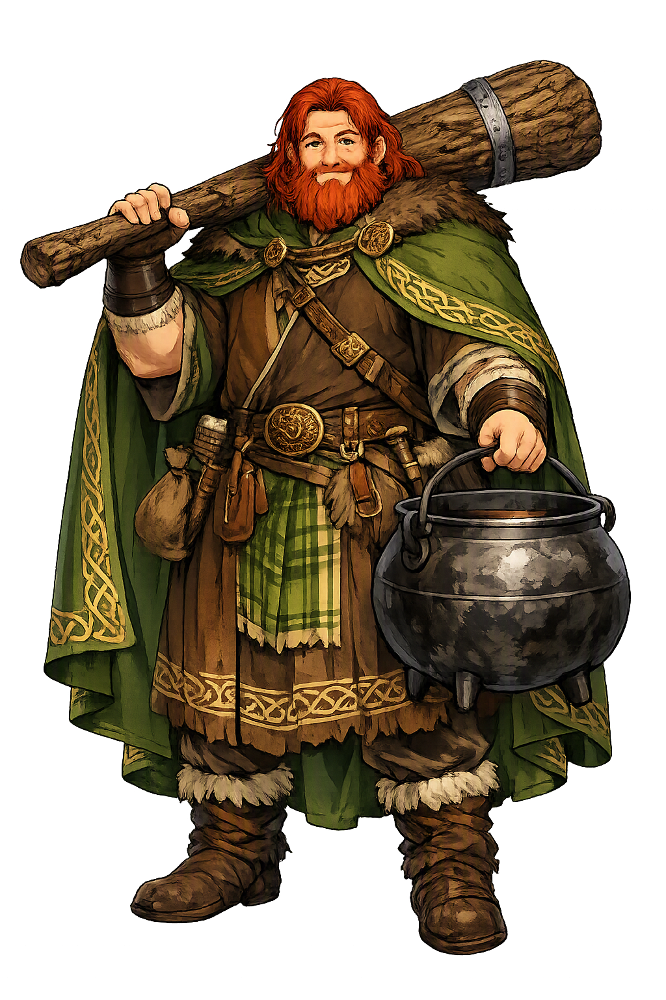

The Authentic Orthography
Abundance, Strength, Magic · The Good God (from Old Irish Dagde)

Unicode restoration and ASCII comparison
Dagda
The name survives in scholarly transliteration. Dagda is the standard Celtic romanisation, documented in academic sources — “The Good God (from Old Irish Dagde)”. Because the spelling uses only Latin letters, the form is the same in both ASCII and Unicode.
No indigenous writing system is securely attested for individual celtic names. The form shown is a modern scholarly transliteration.
dagda
The plain dagda form is identical to the Unicode restoration. Because this name is already written in Latin letters, no diacritics, stress, or script information were lost — only capitalization differs.
Dagda
The Unicode restoration does not need to recover lost marks for Dagda. Its value is canonical spelling and consistent cataloguing, not the reconstruction of erased orthography. The domain is readable as-is to both DNS and humanity.
Dagda.com → dagda.com
The non-ASCII characters in Dagda are encoded while the ASCII remains visible. To the DNS, it is Punycode. To humanity, it is Dagda.
How Dagda is preserved in writing
No indigenous writing system is securely attested for individual celtic names. The form shown is a modern scholarly transliteration.
Contribute scholarly provenance →Owned, ideal, and ASCII forms of Dagda
Dagda
The full Unicode restoration. dagda.com is not in the PuniCodex collection — it is watched for release; if it drops, this temple upgrades to an owned flagship.
How Dagda was spoken
The Club of Life and Death, the Cauldron of Plenty, the Harp of the Three Strains
The Dagda — Eochu Ollathir, the All-Father — is the great father-figure of the Túatha Dé Danann: their king for eighty years, master of every art, and owner of three wonders no other Irish god can match — the club whose one end kills nine men at a blow while the other restores them, the cauldron from which no company ever went away unsatisfied, and the harp that leaps to his hand from the enemy's wall and plays the world to tears, to laughter, and to sleep.
So heavy it had to be dragged on a wheel; one end kills nine men at a stroke, the other brings the slain back to life.
The fourth treasure, brought from the city of Murias — the pot of plenty from which no company ever went away unthankful.
Daur Da Bláo, the Oak of Two Greens; Coir Cethar Chuir, the Four-Angled Music — it killed nine men coming to his hand, then played tears, laughter, and sleep.
'The All-Father' — father of Óengus, Midir, Bodb Derg, and Brigit; the Túatha Dé Danann's provision and, for eighty years, their king.
Stories of Dagda
The Dagda's dossier is the largest of any Túatha Dé Danann god: he is king, laborer, glutton, lover, harper, and father, and Cath Maige Tuired gives him the war's two strangest set-pieces — the porridge pit before the battle and the harp on the enemy's wall after it.
When the Túatha Dé Danann came to Ireland, the tradition says, they came from four cities of the north of the world — Falias, Gorias, Finias, and Murias — and each city yielded a treasure. From Murias came the Dagda's cauldron, and the poem of the four jewels fixes its fame in one line: no company ever went away from it unthankful.
The Lebor Gabála Érenn, Ireland's medieval book of invasions, then gives him the longest reign of the divine kings: Eochu Ollathir, that is the Dagda, held the kingship for eighty years — and it records his death at the Brug, his mound on the Boyne, from the wound that Cethlenn, Balor's wife, had dealt him at Mag Tuired.
When the half-Fomorian Bres was made king and laid the Túatha Dé Danann under tribute, the greatest of them were put to work like serfs: Ogma carried the firewood, and the Dagda was set to building raths around Bres' stronghold, laboring every day at the forts of a usurper. There the satirist Cridenbél found him, and demanded the three best bits of the Dagda's ration every night — for a satirist's curse could raise blisters on a king's face, and no one dared refuse him.
The Dagda's health failed under the tax until his son Óengus took a hand. On Óengus's counsel the Dagda asked Bres for the pick of the cattle of Ireland as his wages, and hid three gold coins in the porridge meant for Cridenbél's portion. The satirist swallowed greed and gold together and died of it; when Bres demanded the Dagda's death for the killing, Óengus's plea turned the case — the gold found in the dead man's belly was itself the proof of his greed. The episode is the tradition's slyest portrait of the god: a king enduring serfdom, rescued not by force but by a father's patience and a son's wit.
On the eve of the second battle of Mag Tuired the Dagda went to the Fomorian camp to win a truce, and the Fomorians, who knew his love of food, prepared a mock-feast to kill him with: eighty measures of new milk and the same of meal and fat, with goats and sheep and swine boiled into it, all poured into a great pit in the ground. Eat it all, they told him, or die — for to him death was no worse than leaving the porridge. He took his ladle, big enough for a man and a woman to lie in the hollow of it, ate to the scraping of the pit, and walked away with his belly dragging on the ground while the Fomorians roared with laughter — and the truce was won.
That Samain night he met the Mórrígan at the ford of the Unius in Connacht, where she stood washing with one foot on either side of the water. They lay together at the ford — the place was afterward called the Bed of the Couple — and she pledged herself to the Túatha Dé Danann's cause: she told him where the Fomorians would land, and promised to bring him the hearts of their fighting-men and the blood of their king Indech. The glutton the Fomorians mocked came home from the truce with the war-goddess's promise in his hand.
After the battle the Fomorians had carried off the Dagda's harper, Uaithne, and the harp itself hung on the wall of the hall where Bres feasted — the harp the Dagda called Daur Da Bláo, the Oak of Two Greens, and Coir Cethar Chuir, the Four-Angled Music, in which he had bound the melodies so that they would not sound until he summoned them. Lugh, the Dagda, and Ogma pursued the retreating host and came to that hall, and the Dagda called the harp to him. It sprang from the wall and came through the hall to his hand, killing nine men in its path.
Then he played the three strains that Irish music ever after took as its whole art. First the goltraí, the weeping-strain, until their women wept; then the gentraí, the laughing-strain, until their youths and maidens laughed; last the suantraí, the sleeping-strain, until the whole host slept — and the three of them walked out of the hall through sleeping enemies. When the harpers of Ireland later divided their music into three kinds, they were naming the Dagda's set.
The Dagda's most famous fatherhood begins with a deception of time itself. He desired Bóand, the wife of Elcmar of the Brug, and sent Elcmar away on a day's errand; and to hide what followed, the tales say, he held the sun fast in the sky for nine months, so that the child Óengus was conceived and born within a single day — whence the boy was called mac ind Óc, the son of the young.
Years later, when the Dagda divided the síd-mounds of Ireland among the defeated Túatha Dé Danann, Óengus was away fostered with Midir and received nothing. He came home and asked his father for land, and the Dagda, having no mound left to give, granted him Brú na Bóinne for a day and a night. When the term was spent and the Dagda asked for his house back, Óengus answered that it is in days and nights that the whole world is spent — and kept the greatest mound in Ireland on a quibble. The All-Father lost the argument, and one suspects he meant to.
The Dagda is the god of competence, and his name says so: the 'good' of the Good God is the goodness of the craftsman, not the confessor — he is good at things, all the things, and the tradition loves him for it without ever making him solemn. He is the only great god in the Irish corpus whom the myths allow to be ridiculous: belly dragging, porridge-smeared, out-argued by his own son, set to digging forts by a usurper. And every one of those scenes ends the same way — the job finished, the pit scraped clean, the truce won, the satirist buried by his own greed.
Enter Extended Lore